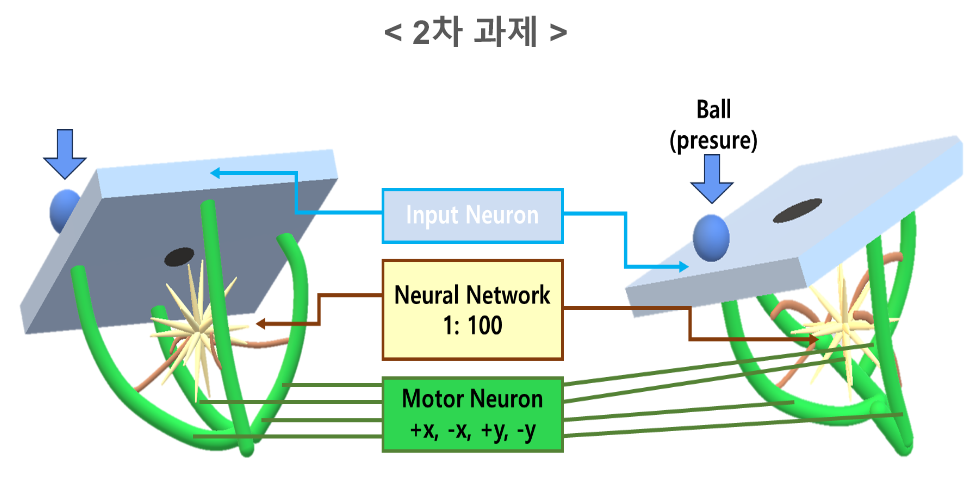

1. BallControl 입력 표현과 출력 정의
BallControl은 공의 위치를 보고 보드를 어느 방향으로 기울일지 결정하는 제어 문제이다. 그러나 “공이 오른쪽 위에 있고 15g이다”라는 물리 상태는 그대로 Verilog의 입력이 될 수 없다. 위치의 범위, 무게의 표현 방식, 제어 주기, 출력의 의미를 먼저 비트와 clock의 언어로 정의해야 한다. 이 설계에서는 보드를 11×9 격자로 이산화해 위치를 one-hot 신호로 만들고, 공의 무게는 정해진 시간 창 안의 spike 빈도로 바꿨다. 이 글은 과제 문장을 회로 사양으로 바꾸는 과정과, one-hot·rate encoding을 사용했을 때 얻는 장점과 잃는 정보를 구체적인 좌표 예시로 설명한다.
입력·출력 사양
입력 경계에서는 공의 현재 좌표와 무게가 이미 디지털 값으로 제공된다고 가정한다. 30×30cm 보드는 X축 11개, Y축 9개의 이산 좌표로 나뉘고, 99개 위치 가운데 현재 위치 하나가 활성화된다. 무게는 별도의 공간 좌표가 아니라 이 활성 입력이 시간축에서 얼마나 자주 spike를 내는지를 조절한다. 출력 경계는 연속적인 전압이나 PWM이 아니라 +X·−X·+Y·−Y 네 방향의 spike 이벤트이다.
- 보드
- 30×30cm
- 공 무게
- 1~30g
- 목표
- 중앙 반경 1cm
- 출력
- +X · −X · +Y · −Y
과제 조건과 좌표 모델
좌표계의 중심은 (0, 0)이며, X축은 −5부터 +5, Y축은 −4부터 +4까지의 격자로 모델링된다. 11×9 격자는 99개 입력 뉴런에 대응한다. 중앙 반경 1cm는 제어 목표의 물리 기준으로 사용된다.
이산 좌표 모델을 사용하는 이유는 제어 문제와 센서 문제를 분리하기 위해서다. 실제 시스템에서는 카메라나 압력 센서가 공의 위치를 연속값으로 추정하고, 그 값을 회로 입력 형식으로 양자화해야 한다. 최종 실험에서는 이 앞단이 이미 좌표를 제공한다고 가정하고, 좌표가 주어진 이후의 SNN 반응을 검증한다. 따라서 30cm를 11칸과 9칸으로 나눈 값이 실제 센서의 분해능을 의미하지는 않는다.

| 물리 조건 | 회로에서의 표현 | 설계 의미 |
|---|---|---|
| 30×30cm 보드 | 11×9 위치 격자 | 연속 좌표를 99개 이산 위치로 단순화 |
| 중앙 목표 | (0, 0) | 부호가 방향, 절댓값이 중앙과의 거리 |
| 중앙 반경 1cm | 출력 종료 조건의 물리 기준 | 실물 센서 오차를 포함한 검증은 별도 범위 |
| 공 무게 1~30g | digital weight와 spike rate | 무거운 공에 더 큰 시간축 자극 부여 |
| 보드 기울임 | 네 방향 출력 뉴런 | +X·−X·+Y·−Y 제어 이벤트로 분리 |
좌표 격자와 무게 입력은 제어 문제를 시험하기 위한 모델이다. 카메라의 실제 좌표 추정, 센서 노이즈 보정, 좌표의 연속성은 회로 입력 앞단의 별도 문제이다.
위치 one-hot 부호화
X축 11개와 Y축 9개의 조합은 99개 위치를 만든다. 현재 좌표에 해당하는 입력 뉴런 하나만 활성화되며, 네트워크는 활성 위치를 one-hot 벡터로 수신한다. 위치별 흥분·억제 가중치는 이 입력 벡터에 연결된다.
one-hot 표현은 숫자 좌표를 이진수로 직접 넣는 방식보다 입력선 수가 많지만, 각 위치와 가중치 행을 일대일로 연결할 수 있다는 장점이 있다. 예를 들어 같은 X값을 가진 좌표라도 Y값이 다르면 서로 다른 입력 뉴런이 선택되므로, 위치별로 다른 흥분성·억제성 연결을 줄 수 있다. 반대로 격자 해상도를 높일수록 입력 뉴런과 weight 저장량이 빠르게 증가한다는 점은 이 표현의 구조적 비용이다.
예를 들어 공이 (+3, +4)에 있으면 해당 위치 뉴런이 활성화된다. 중앙 방향에 해당하는 −X와 −Y 경로는 출력 뉴런의 막전위 누적에 기여한다. 이때 입력의 1은 “모터를 즉시 켠다”는 명령이 아니라, hidden layer와 output layer가 처리할 spike 자극을 의미한다. 최종 spike 출력 역시 모터 구동 전압이나 PWM이 아니라 방향 이벤트이다.
무게 rate encoding
one-shot 입력은 위치 정보만 전달한다. 무게 조건은 정해진 시간 창에서
counter < weight일 때 spike를 발생시키는 rate encoding으로
표현된다. digital weight가 클수록 입력 이벤트 수가 증가한다.
첫 번째 실험의 Input_Neuron_SingleShot은 enable 시점에 한 번의
spike를 내보낸다. 이 구조에서는 같은 위치라면 공이 가볍든 무겁든
네트워크가 받는 입력이 같다. 두 번째 실험의
Input_Neuron_RateEncoder는 ball_weight를 입력으로
받고, 시간 창 안에서 digital weight만큼 반복 spike를 만든다. 위치는
어느 weight 행을 읽을지 결정하고, 무게는 그 행이 시간축에서 얼마나
강하게 자극되는지를 결정하는 식으로 두 정보의 역할이 분리된다.
현재 위치의 공간 표현
99개 중 하나가 활성화되어 현재 공이 어느 격자에 있는지를 나타낸다.
무게에 따른 시간축 자극
15g에는 digital weight 123, 30g에는 255를 적용한다.
| 구분 | 실험 1 | 실험 2 |
|---|---|---|
| 입력 뉴런 | Input_Neuron_SingleShot | Input_Neuron_RateEncoder |
| Top 입력 | ball_x, ball_y, start | 기존 입력 + ball_weight |
| 무게 반영 | 없음 | 시간 창의 spike rate로 반영 |
| 뉴런 설정 | THRESHOLD 40 · LEAK_SHIFT 4 | THRESHOLD 300 · LEAK_SHIFT 6 |
| 검증 목적 | 좌표–방향 연결 확인 | 위치와 무게를 함께 넣은 반응 비교 |
123과 255는 센서 교정식이 아닌 시뮬레이션 입력값이다. 중간 무게에 대한 선형성이나 실제 구동력은 이 값만으로 정의되지 않는다. 또한 실험 1과 실험 2는 입력 방식뿐 아니라 threshold와 leak 설정도 다르므로, 두 결과의 차이를 무게 하나의 효과로만 해석할 수 없다.
예시: (+3, +4), 15g 입력을 회로가 읽는 방법
공이 중앙의 오른쪽 위인 (+3, +4)에 있다고 가정한다. 먼저 11×9 좌표표에서 이 위치에 해당하는 입력 뉴런 하나가 선택된다. X와 Y가 모두 양수이므로 중앙으로 가려면 −X와 −Y 방향의 반응이 필요하다. 선택된 위치 뉴런의 흥분·억제 가중치는 이 두 방향의 막전위가 증가하도록 구성되고, 반대 방향인 +X와 +Y는 상대적으로 억제된다.
15g 조건에서는 digital weight 123을 rate encoder에 넣는다. 정해진 시간 창 안에서 입력 spike가 반복되고, 각 time step의 spike가 은닉 뉴런과 출력 뉴런의 막전위에 누적된다. 임계값을 넘은 횟수가 방향별 spike count가 된다. 시뮬레이션의 좌표 갱신 규칙은 −X spike 수를 X에서 빼고 −Y spike 수를 Y에서 빼는 식으로 결과 위치를 계산한다. 이 계산은 회로의 방향 반응을 읽기 위한 모델이며, 공이 실제로 동일한 거리만큼 이동한다는 뜻은 아니다.
이 예시는 좌표, 무게, spike 수가 어떻게 연결되는지를 설명하기 위한 것이다. 최종 결과표의 각 입력은 실제 시뮬레이션 수치를 사용하며, 센서 측정값과 모터 이동량 사이의 교정식은 포함하지 않는다.
방향 출력 정의
출력 계층은 +X, −X, +Y, −Y 네 채널로 구성된다. 같은 시간 창의 방향별 spike 수를 집계하고, 서로 반대인 채널의 차이를 X축과 Y축 제어량으로 변환한다. 파형에서는 출력 채널과 제어 방향의 대응을 직접 확인할 수 있다.
중앙이 (0, 0)이므로 현재 X가 양수이면 −X 채널이, 현재 X가 음수이면 +X 채널이 중앙 복귀 방향이 된다. Y축도 같은 원리로 동작한다. 방향별 spike 수를 이동 칸 수로 해석하면, 예를 들어 (+3, +4)에서는 −X와 −Y 출력이 각각 중앙까지 필요한 이동량을 표현한다. 다만 이 해석은 한 spike가 한 칸의 이동으로 이어진다는 시뮬레이션 규칙이며, 실제 보드의 기울기·마찰·속도까지 포함한 물리 법칙은 아니다.
| 출력 뉴런 | 의미 | 중앙으로 복귀하는 예 |
|---|---|---|
| +X | X축 양의 방향 제어 이벤트 | 공이 중앙의 왼쪽에 있을 때 증가 |
| −X | X축 음의 방향 제어 이벤트 | 공이 중앙의 오른쪽에 있을 때 증가 |
| +Y | Y축 양의 방향 제어 이벤트 | 공이 중앙의 아래쪽에 있을 때 증가 |
| −Y | Y축 음의 방향 제어 이벤트 | 공이 중앙의 위쪽에 있을 때 증가 |
이렇게 정의된 입력과 출력 사이에는 hidden/output LIF 뉴런의 막전위 누적과 시간 단계 제어가 놓인다. 다음 문서는 한 번의 입력 spike가 가중합, leak, threshold, reset을 거쳐 네 방향 출력으로 변환되는 RTL 구조를 다룬다.